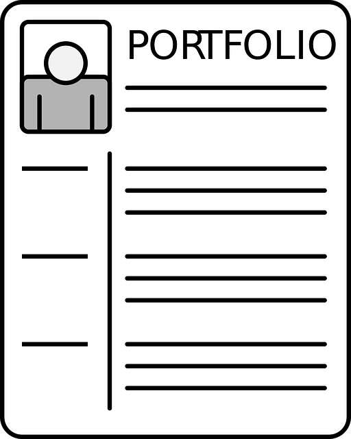

Vinícius Faria de Souza
Front End Development
“Antes do software poder ser reutilizável ele primeiro tem de ser utilizável.”
Ralph Johnson
Trabalho em destaque
Mockup to article
Acesse ao repositório do projeto
Trading Card Animal
Acesse ao repositório do projeto

Portifólio
Acesse ao repositório do projeto